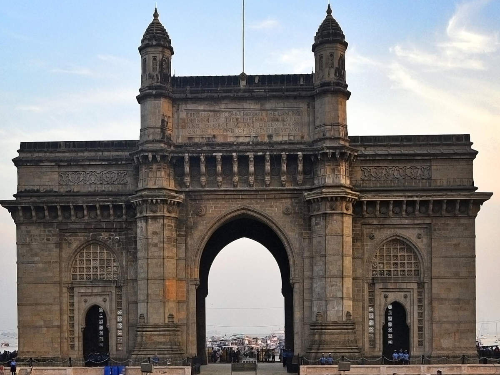
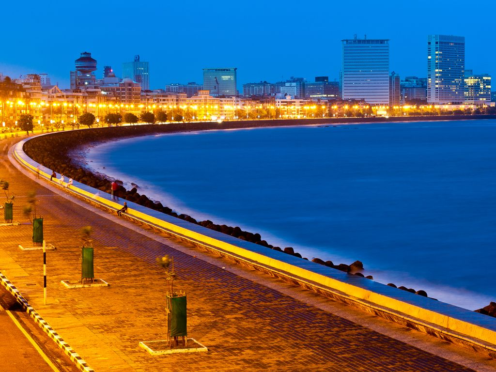
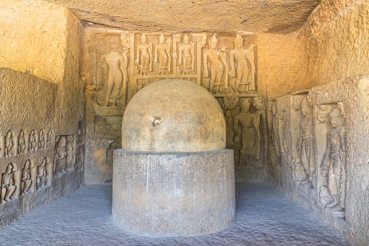

Want to see a more cosmopolitan side of India? Head to the energetic, coastal city of Mumbai—home to ultra-wealthy entrepreneurs and the hottest Bollywood actors. Tourists are never far from five-star hotels or gourmet restaurants in this luxe city. And even if those activities are out of budget, a cruise down the beloved Marine Drive will make you feel like royalty as you catch a glimpse of the scenic coast and glamorous Art Deco buildings.
You can also see a more authentic, local side of Mumbai in the bustling "Thieves Market" or at the Churchgate railway station, where hundreds of thousands of homemade lunches are packed up for delivery to the city's office workers every day.
Make sure you devote a day to checking out Sanjay Gandhi National Park and exploring the 2,000-year-old Kanheri Cave carvings.
Gateway of India
Standing proud on the banks of the Arabian Sea at the Apollo Bunder waterfront area, the Gateway of India is one of Mumbai's most popular and treasured landmarks. The 26-meter basalt archway, which combines the architectural styles of Roman triumphal arches with traditional Hindu and Muslim designs, was built as a gesture of welcoming for King George V and Queen Mary when they visited British India in 1911. Ironically, it was under this very archway that the last British troops exited India in 1948, after the country declared its independence from Great Britain.
Nowadays, the Gateway of India is one of the most popular gathering spots in Mumbai for tourists and locals alike. Watch the yachts and ferries take off to sea from the five jetties that flank the arch. Enjoy some of the famous bhelpuri (a crunchy, savory snack made of puffed rice and doused in tamarind sauce) from the street food vendors. Or just spend an hour or two people watching at this lively attraction.
Afterwards, walk 10 minutes southwest to the Colaba Causeway Market, a vibrant bazaar selling everything you can imagine and more. It's one of the best places for cheap shopping in Mumbai.
Address: End of C. Shivaji Maharaj, Apollo Bandar, Colaba, Mumbai
Bandra-Worli sea link

One of Mumbai's most iconic sites is a cable-stayed bridge known as the Bandra-Worli Sea Link. Opened in 2009, the eight-lane bridge connects the central business district with the western suburbs over the open sea, offering some much-needed relief from the congestion on the Mahim Causeway. It has become the Mumbai equivalent of New York's Brooklyn Bridge or Sydney's Opera House.
For the most impressive views of the Bandra-Worli Sea Link, head to the Bandra Fort, a historic watchtower built by the Portuguese in 1640. It's also worth driving across the bridge, as well. By day, you can see the crashing sea on both sides of the bridge. And at night, watch the bridge light up with spectacular colors.
Marine Drive
No trip to Mumbai would be complete without a cruise down Marine Drive. The 3.6-kilometer-long, C-shaped boulevard offers epic views of the coast. However, just as amazing are the sightseeing opportunities on the other side of Marine Drive. The street is lined with stunning Art Deco buildings that have earned status as a UNESCO World Heritage site.
After your mini road trip, head out on foot for some more sightseeing along the Marine Drive promenade. The best time to go is at sunset. That's when tourists and Mumbaikars gather on the sands of Girgaum Chowpatty to see the cotton candy skies fade to dark while noshing on Mumbai's famous street food from nearby stalls.
Kanheri Caves
While Mumbai may look like a shiny, modern city at first glance, it also has some ancient sites that will leave you in awe. Spend a day at Sanjay Gandhi National Park exploring the Kanheri Caves, a complex of monuments that were carved out of the basalt formations around 2,000 years ago. Inside the 109 cave entrances, you'll see large stupas (a hint that this was once a sacred place for Buddhists), congregation areas, and prayer halls. Look for the incomplete paintings of the Buddha on the ceiling of cave 34.
Address: Borivali East, Mumbai